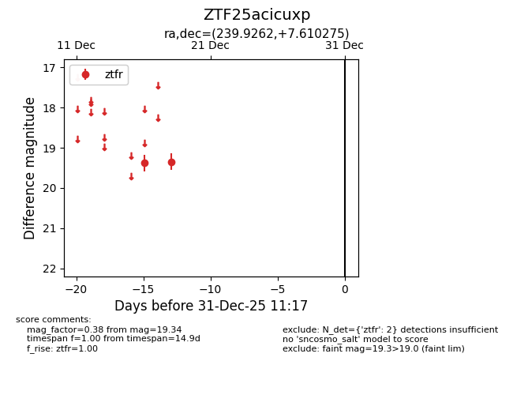
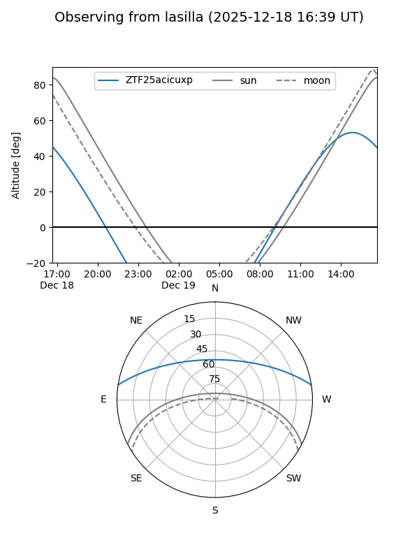
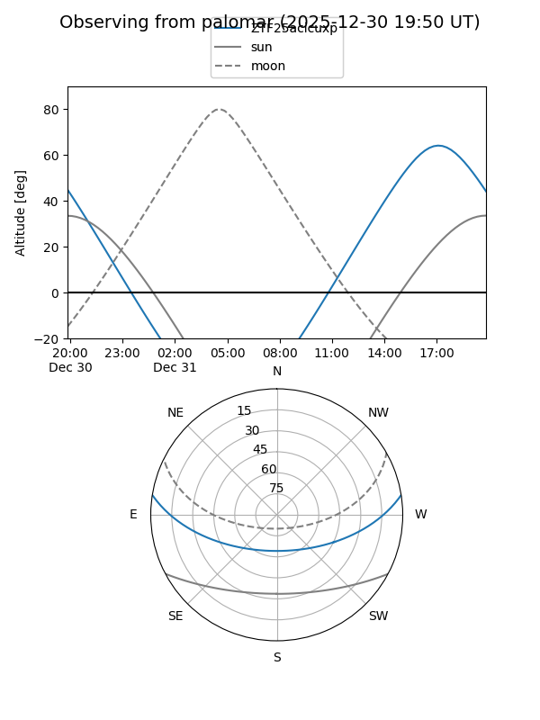

ZTF25acicuxp
Target ZTF25acicuxp at 2025-12-20 16:25
Aliases and brokers:
FINK: fink-portal.org/ZTF25acicuxp
Lasair: lasair-ztf.lsst.ac.uk/objects/ZTF25acicuxp
ALeRCE: alerce.online/object/ZTF25acicuxp
alt names
ZTF25acicuxp (ztf,fink_ztf)
Coordinates:
equatorial (ra, dec) = 239.9262,+7.61027
equatorial (HMS+DMS) = 15:59:42.30,+07:36:36.99
galactic (l, b) = (18.2609,+41.39602)
Flags:
Photometry:
last ztfr=19.34
2 ztfr detections
Lightcurve

Visibility


Additional plots